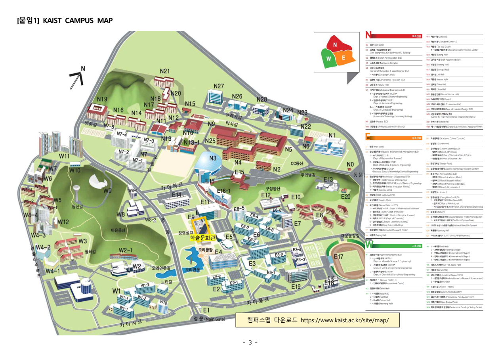

12:30부터 입장 · 13:00~17:00 · 학술문화관(E9) 2층 양승택 오디토리움
수험표와 사진이 있는 인정 신분증을 준비하세요. 고등학교 학생증은 인정되지 않습니다.
현장 최종 출석 확인 후 10월 31일(토)부터 등록서약서 제출 가능 · 마감 11월 6일(금) 18:00
입학정보시스템 열기 ↗등록 서류 & 장학 안내
1월에 입학처로 보낼 서류
- 공통: 고교 마지막 학기 성적이 포함된 학교생활기록부 원본.
- 지원 때 업로드한 경우: 자기소개서 증빙자료 학교장 확인서 원본, 외부 추천 교사 학교장 확인서 원본, 모의평가 성적표.
- 자기소개서 증빙자료의 개별 원본(상장·수료증)은 제출 불필요.
- 각 장의 원본 확인이 가능해야 하며, 불가피한 사본은 학교장 직인으로 원본대조필 확인.
- 봉투 겉면과 서류별 앞장 우측 상단에 전형명·수험번호·성명을 직접 기입.
34141 대전광역시 유성구 대학로 291
KAIST 양분순빌딩(E16-1) 102호 입학전형팀
등기우편 또는 개별 방문 · 평일 09:00~18:00, 점심 12:00~13:00 제외 · 042-350-4810
국비장학생
합격증서의 장학구분은 국비장학생입니다. 8학기 등록금과 학기 중 학자금 지원 대상이며, 1학년 등록금은 전액 지원, 2학년부터는 성적 기준에 따라 일부 차등 지원됩니다.
국가장학금을 신청한 학생에게 학자금 지원구간과 관계없이 학교 학사학자금이 지원됩니다. 안내문 기준 월 145,000원, 학기당 4개월입니다.
국가장학금 신청 기간은 첨부 안내문에 명시되어 있지 않습니다. 한국장학재단의 2027년 1학기 공고를 확인하고 가구원 동의까지 완료하세요.
한국장학재단 ↗ · 장학복지팀 042-350-4712
다른 신입생 장학제도
KPF 총장장학생과 PSS 과학기술대학장 장학생은 별도 선발·장학증서가 필요한 제도입니다. 현재 확정 장학으로 표시하지 않았습니다. 삼성반도체 장학은 반도체시스템공학과 합격자 대상입니다.
Hello! KAIST 당일 시간표
- 12:30~13:00
- 본인 확인, 접수, 착석
- 13:00~13:05
- 개회 및 오리엔테이션
- 13:05~14:00
- 교수진과 전공 탐색 및 질의응답
- 14:00~14:40
- 재학생 멘토와 대학생활 토크
- 14:40~15:10
- 예비 동기 네트워킹
- 15:10~15:25
- 휴식
- 15:25~16:45
- 넙죽이 쇼! 전원 참여 프로그램
- 16:45~17:00
- 설문, 최종 출석 확인, 참여확인서 수령
행사장 캠퍼스 지도

출처: Hello! KAIST 운영안내 붙임1 · 행사장 E9 · 온라인 지도에서 최신 동선을 확인하세요.
입학 후 수강신청에서 확인할 사항
기초필수과목은 대체로 일괄 배정됩니다. 일반화학 I 및 일반화학실험 I는 직접 수강신청해야 합니다. 전체 12학점 이상을 유지하고 배정 과목을 취소하기 전에 변경 절차를 확인하세요. 영어 과목은 입학 후 4학기 내 이수가 필요합니다.
기타 선택 강좌 및 등록포기 안내
IT아카데미: Python 업무 자동화 10.21~10.23, 개발 실무 11.02~11.30(월요일), 로컬 LLM 프로젝트 11.17~12.01(화·목). 희망 시 각 강좌 개강 전 신청, 수강료와 세부 일정은 IT아카데미 확인.
등록 후 입학을 포기하는 경우 입학정보시스템에서 2027.02.23까지 등록포기서를 제출합니다. 타 대학 등록 시 이중등록 여부를 확인하세요.
출처: 등록안내문(37쪽), Hello! KAIST 운영안내(3쪽), 신입생 장학제도 안내(1쪽), 자기소개서 증빙자료 안내(2쪽), 합격증서 및 10.30 참석 확정 정보. 세부 일정은 학내 사정에 따라 변경될 수 있습니다.